🐟 Fish of the Rivers & Lakes
66 freshwater species of WorldForge 2 — the fish that populate each river reach (upper / middle / delta) and each lake type. Click any fish for its plate.
Temperate rivers (24)
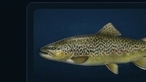
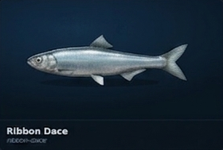

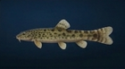
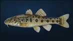
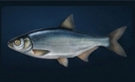
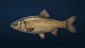
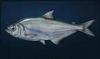
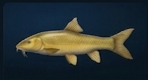
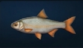

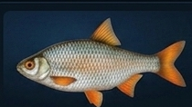
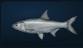
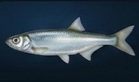
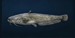
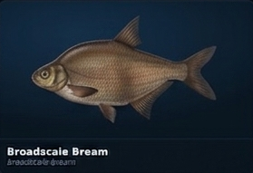
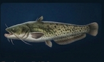
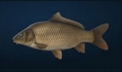
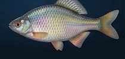
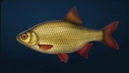
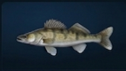


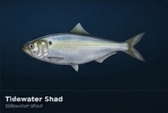
Tropical rivers (12)
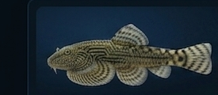
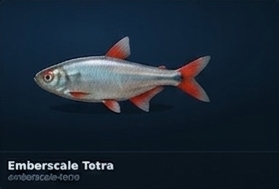
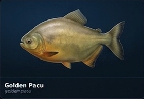
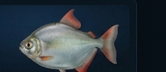
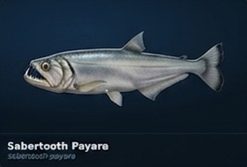
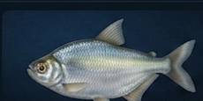
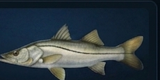
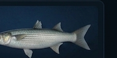
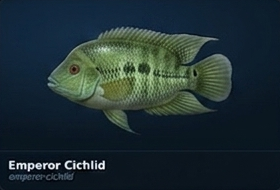
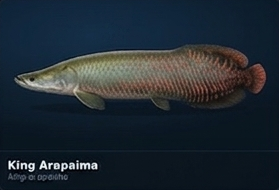
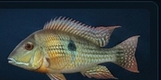
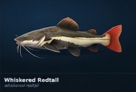
Boreal & subarctic rivers (12)
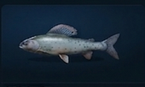
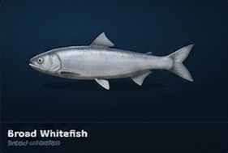
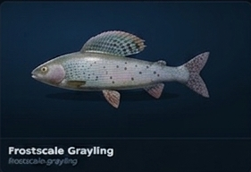
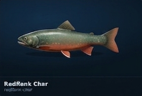
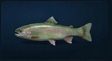

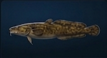
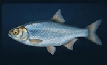
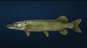
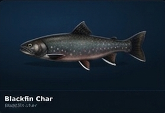
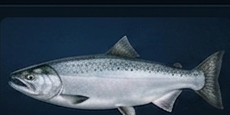
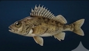
Desert & oasis (6)
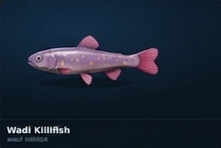
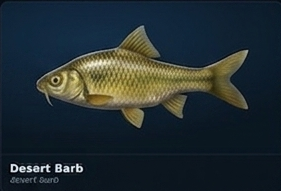
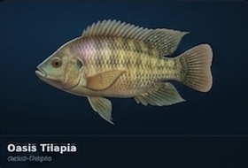
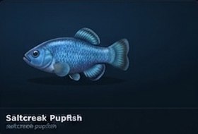
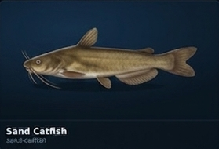
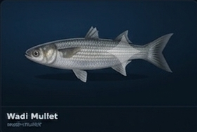
Lakes (12)
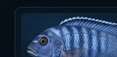